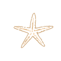
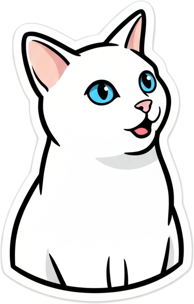
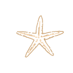
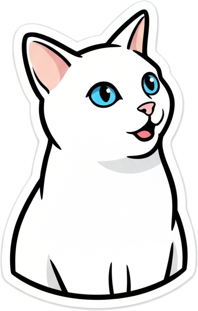

About
 



Okay, so you clicked About, huh? Let's make this worth your time.
Hey 👋
I'm Nidhi!
I'm a designer who's into mixing stories, tech, and problem-solving to make experiences people actually like.
Right now, I'm getting my Master's in Immersive Media Design. I play around with VR/AR while thinking about the big picture. I've got a background in doing UX research, and using tech in cool ways. That lets me design experiences that work well, but also feel enjoyable.
Over the last few years, I've picked up skills with Adobe Creative Suite, Unreal Engine, Unity, Blender, making prototypes, and talking to users. I've done everything from making VR setups to tell stories about culture, to making brand plans and figuring out product designs.
When I'm not working, I’m super curious about how design from India can inspire the world. You can usually find me trying out new AI tools, figuring out how things work, or getting people to follow a plan to reach a goal.
If you want to work with me, hire me, or just chat, hit me up!